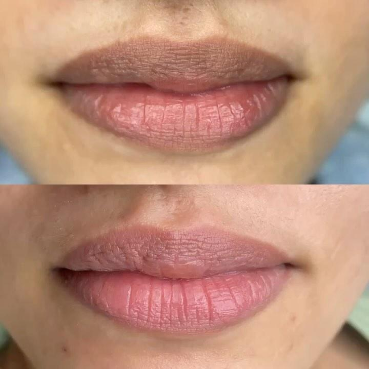
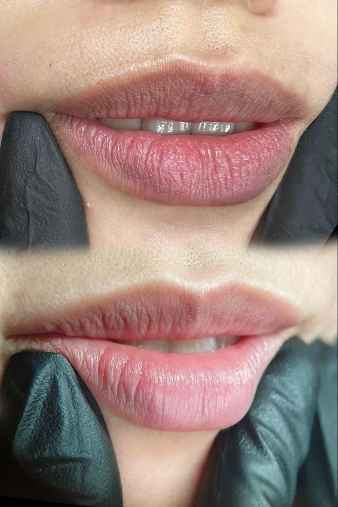

Môi Thâm Bẩm Sinh Có Khử Được Không? Điều Bạn Nên Biết Trước Khi Thực Hiện
Nhiều người sở hữu đôi môi thâm ngay từ nhỏ dù không hút thuốc, không dùng son thường xuyên hay không có thói quen sinh hoạt ảnh hưởng đến màu môi. Đây là tình trạng môi thâm bẩm sinh, chủ yếu liên quan đến yếu tố cơ địa và sắc tố da.
Điều này khiến không ít người cảm thấy thiếu tự tin khi để mặt mộc hoặc phải sử dụng son môi mỗi ngày để cải thiện diện mạo.
Vậy môi thâm bẩm sinh có khử được không? Có khác gì với môi thâm do hút thuốc hay tác động từ môi trường? Hãy cùng ELLY PMU tìm hiểu chi tiết.
Môi Thâm Bẩm Sinh Là Gì?
Môi thâm bẩm sinh là tình trạng sắc tố môi đậm hơn bình thường ngay từ nhỏ.
Khác với môi thâm do hút thuốc, mỹ phẩm, ánh nắng hoặc thiếu chăm sóc, môi thâm bẩm sinh chủ yếu liên quan đến:
- Di truyền.
- Lượng melanin.
- Cơ địa từng người.
Dấu Hiệu Nhận Biết Môi Thâm Bẩm Sinh
Bạn có thể thuộc nhóm môi thâm bẩm sinh nếu:
- Môi đã sẫm màu từ nhỏ.
- Màu môi không thay đổi nhiều theo thời gian.
- Không hút thuốc nhưng môi vẫn thâm.
- Không sử dụng son nhưng màu môi vẫn tối.
Môi Thâm Bẩm Sinh Có Khử Được Không?
Đây là từ khóa được rất nhiều người tìm kiếm. Thực tế, nhiều trường hợp môi thâm bẩm sinh vẫn có thể được cải thiện. Tuy nhiên, kết quả sẽ phụ thuộc vào:
- Mức độ sắc tố.
- Cơ địa.
- Kỹ thuật thực hiện.
- Quá trình chăm sóc sau khi làm.
Để biết phương án phù hợp, bạn nên được kỹ thuật viên đánh giá trực tiếp thay vì áp dụng chung cho mọi trường hợp.
Nếu bạn luôn phải dùng son để che màu môi hoặc ngại để mặt mộc khi ra ngoài, hãy để kỹ thuật viên của ELLY PMU kiểm tra tình trạng môi trước khi tư vấn giải pháp phù hợp.
Ưu đãi trong tháng: giá gốc 1.710K, giảm còn 599K. ELLY PMU có hỗ trợ làm tận nhà theo lịch hẹn.
Những Yếu Tố Ảnh Hưởng Đến Kết Quả
Cơ Địa
Khả năng đáp ứng ở mỗi người sẽ khác nhau, nhất là với nền môi thâm do sắc tố tự nhiên.
Tay Nghề Kỹ Thuật Viên
Đánh giá đúng nền môi giúp lựa chọn phương pháp phù hợp và hạn chế những can thiệp không cần thiết.
Chế Độ Chăm Sóc
Dưỡng môi, uống đủ nước và tuân thủ hướng dẫn sau thực hiện góp phần hỗ trợ quá trình hồi phục.
Thói Quen Sinh Hoạt
Các yếu tố như hút thuốc, thức khuya hoặc tiếp xúc nhiều với ánh nắng có thể ảnh hưởng đến màu môi theo thời gian.
Môi Thâm Bẩm Sinh Có Nên Phun Môi Luôn Không?
Không phải trường hợp nào cũng giống nhau. Tùy tình trạng môi, kỹ thuật viên có thể tư vấn khử thâm trước, phun màu trực tiếp hoặc xây dựng lộ trình phù hợp.
Việc lựa chọn sẽ dựa trên đánh giá thực tế thay vì áp dụng một quy trình cố định.


Khử Thâm Môi Thâm Bẩm Sinh Có Đau Không?
Cảm giác khi thực hiện sẽ khác nhau tùy cơ địa và nền môi. Thông thường, cơ sở sẽ có bước ủ tê theo quy trình để giảm khó chịu. Bạn có thể trao đổi trước với kỹ thuật viên nếu từng nhạy cảm hoặc dễ sưng.
Khử Thâm Môi Thâm Bẩm Sinh Giữ Được Bao Lâu?
Độ bền phụ thuộc vào cơ địa, chế độ chăm sóc và thói quen sinh hoạt. Với môi thâm do cơ địa, khả năng duy trì có thể khác nhau ở từng người, vì vậy việc chăm sóc môi và tái kiểm tra khi cần rất quan trọng.
Môi Thâm Bẩm Sinh Có Bị Thâm Lại Không?
Có thể xảy ra ở một số trường hợp, nhất là khi cơ địa tăng sắc tố mạnh hoặc khách hàng ít dưỡng môi, thường xuyên tiếp xúc ánh nắng, hút thuốc hay thức khuya. Điều này không có nghĩa là khử thâm không hiệu quả, mà là kết quả cần được duy trì bằng chăm sóc đúng cách.
Cách Xử Lý Môi Thâm Bẩm Sinh
Cách xử lý thường bắt đầu bằng việc đánh giá nền môi. Sau đó kỹ thuật viên có thể tư vấn khử thâm, điều chỉnh sắc tố, kết hợp phun màu nhẹ hoặc chia lộ trình theo từng giai đoạn nếu môi thâm lâu năm.
Những Sai Lầm Thường Gặp
Chỉ Cần Son Dưỡng Là Hết Thâm
Son dưỡng giúp giữ ẩm nhưng không làm thay đổi sắc tố bẩm sinh.
Môi Thâm Bẩm Sinh Không Thể Cải Thiện
Nhiều trường hợp vẫn có thể cải thiện khi được đánh giá và thực hiện đúng kỹ thuật.
Chỉ Quan Tâm Đến Giá
Ngoài chi phí, bạn nên cân nhắc tay nghề kỹ thuật viên, quy trình thực hiện và hướng dẫn chăm sóc sau khi làm.
Checklist Trước Khi Khử Thâm Môi
Câu Hỏi Thường Gặp
Môi thâm bẩm sinh có khử được không?
Nhiều trường hợp có thể cải thiện, tuy nhiên cần được đánh giá trực tiếp.
Có cần khử thâm nhiều lần không?
Tùy mức độ sắc tố và cơ địa của từng khách hàng.
Sau khi khử thâm có cần phun môi không?
Điều này phụ thuộc vào nhu cầu và tình trạng môi sau khi được cải thiện.
Một đôi môi đều màu giúp gương mặt tươi tắn hơn và giảm phụ thuộc vào son môi mỗi ngày.
Kết Luận
Khử thâm môi thâm bẩm sinh là chủ đề được nhiều người quan tâm vì ảnh hưởng trực tiếp đến sự tự tin trong cuộc sống hằng ngày. Điều quan trọng là xác định đúng nguyên nhân gây thâm môi và được tư vấn phương án phù hợp thay vì lựa chọn theo cảm tính.